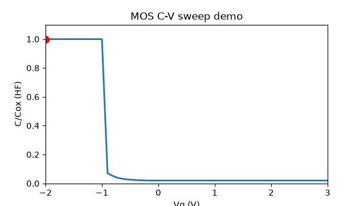
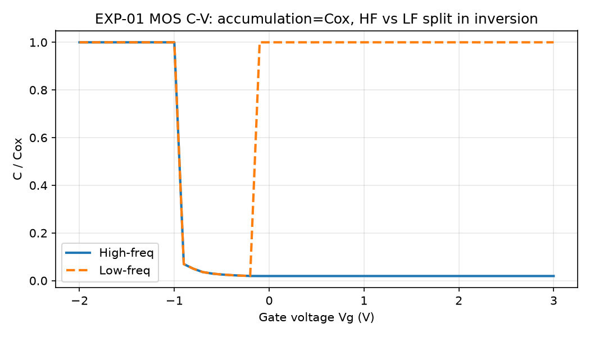
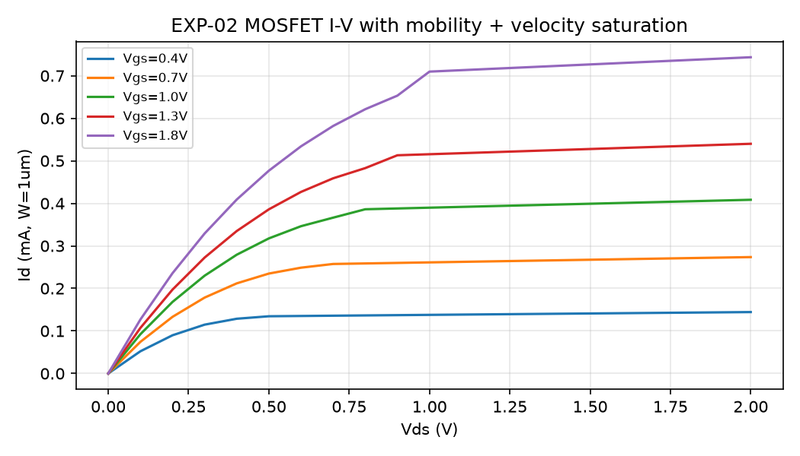

CEO summary: This repo turns a 7-week semiconductor course into 4 runnable experiments. You get MOS C–V curves, MOSFET I–V with real-world corrections, technology-scaling math down to 2 nm and CFET, plus live market proof that physics still scales while business models split. Run one command, get every chart, table and exam check green — no fab needed.
GitHub READMEs play GIFs inline. Full video lives on a host or preview.html via Pages. This repo ships both patterns.



1) Open preview.html locally or via GitHub Pages.
2) Move the sliders below — charts update live.
3) Run bash scripts/reproduce.sh while recording (30–60s) → upload MP4 to Releases/YouTube → link thumbnail here.
Keep GIF < 8MB, thumbnail < 400KB, 6–12s, alt text describing outcome.
Same physics as src/fetlab/physics.py:mos_cv. Drag tox — watch Cox change.
You are here: — accumulation (left) → depletion (dip) → inversion (right, HF stays low).
Think of a transistor as a water tap. Gate = handle, source = water in, drain = water out. Voltage on the handle decides flow. That is all of Week 3 in one sentence.
Metal on top, glass (oxide) in middle, silicon at bottom. Push voltage negative → charges pile at the glass (accumulation, max capacitance). Push positive → silicon empties (depletion, capacitance dips). Push more → new charges flood back (inversion). High-frequency meters are too slow to see the flood — that split is the HF vs LF curve you just plotted.
Give the sandwich a source terminal. Now charges can flow source→drain. A camera pixel (CMOS sensor) is this sandwich collecting light; a CCD is a row of sandwiches passing charges like buckets.
Gently open tap: flow ∝ handle × pipe pressure (linear). Fully open: flow maxes out (saturation, square-law). Barely open: tiny leak grows 10× every ~75 mV (subthreshold — why phones sip battery).
Real taps rust (mobility degradation) and pipes choke at high pressure (velocity saturation). Our degraded curve always sits below the ideal — run EXP-02 to see it.
Halve size → 2× transistors. But tiny taps leak: threshold drops with drain voltage (DIBL 32→77). Gate must hug channel on all sides → FinFET (3 sides) → nanosheet GAA (4 sides) → CFET (stack n on p).
Thinner glass (high-k), stretched silicon (strain), metal gates, backside power. Atom-thin channels sound magic but contacts and capacitance eat the gain — that is the falsifiable limit in this repo.
Interview line: “I reproduced C–V/I–V, quantified DIBL blow-up at 10 nm, and showed economics decoupling with live market data — all in Docker.” You now know more than most candidates.
fetlab + verifydemo.gif 72KB, PNGs, preview.html single-filepaper/PAPER.md + docs/METHODS.mdpip install -r requirements.txt
bash scripts/reproduce.sh
docker compose up --build
| ID | What it proves | Result |
|---|---|---|
| EXP-01 | C(−2V)=Cox; HF-inv < LF-inv | PASS, Cox 1.73e-2 F/m² |
| EXP-02 | Degraded < classical; SS 60–110 | PASS, SS 74.4 mV/dec |
| EXP-03 | Dennard 2.04×; Moore ~2y; DIBL anchors | PASS, 32→77 mV/V |
| EXP-04 | NVDA>TSM; Intel −33% + 2024 loss | PASS |
| pytest | 5 unit checks | 5 passed |
Outputs: benchmarks/results/exp01_cv.csv, exp02_iv.csv, exp03_scaling.csv, exp04_live.json. Single-file preview: open this file directly — no server needed. Video: keep MP4 in Releases, GIF in assets/, thumbnail links to video.